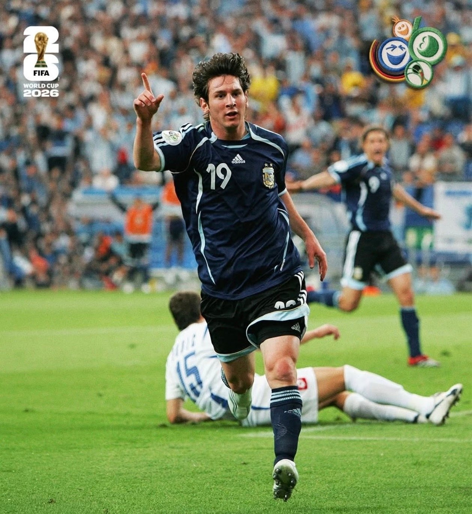
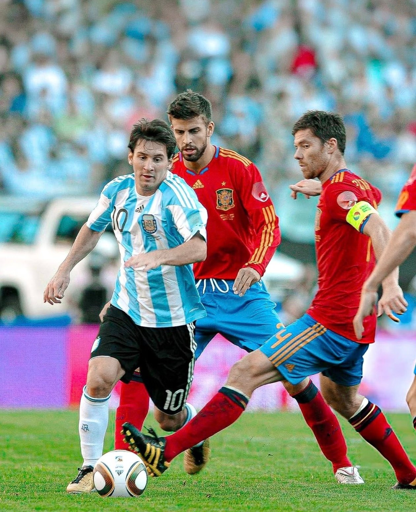
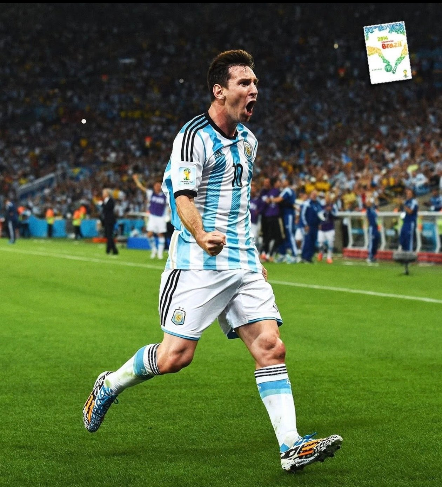
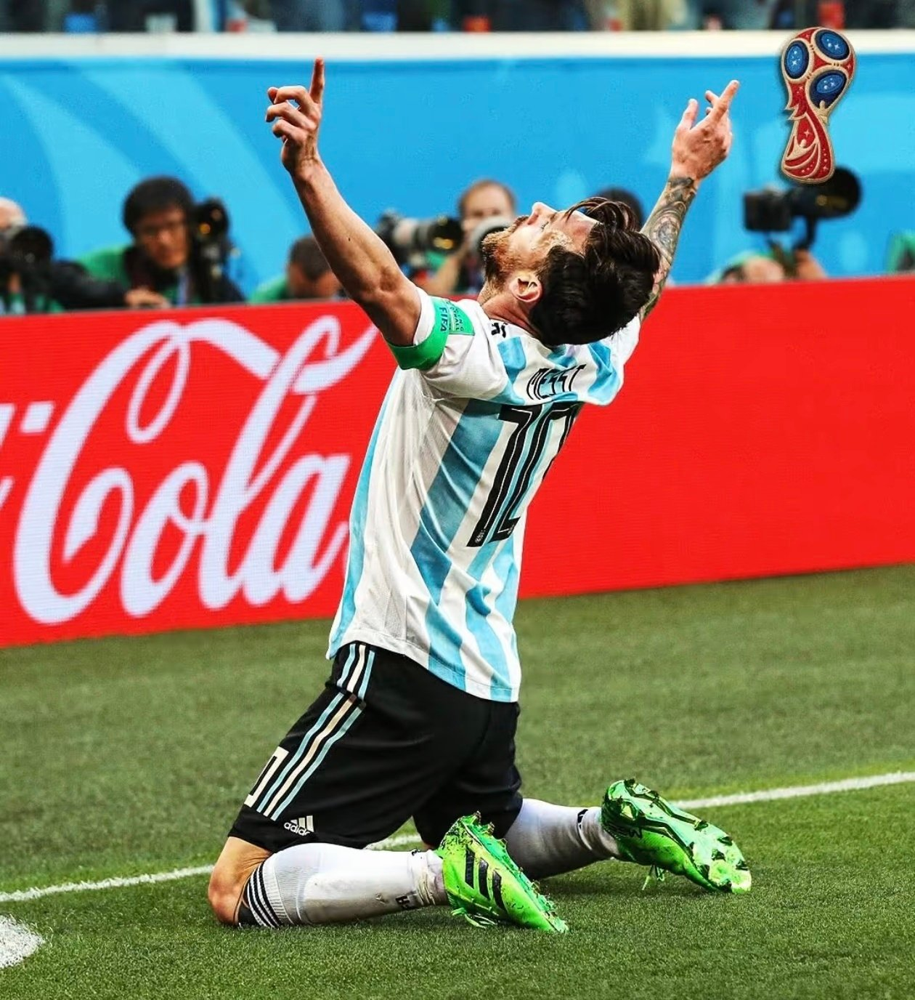
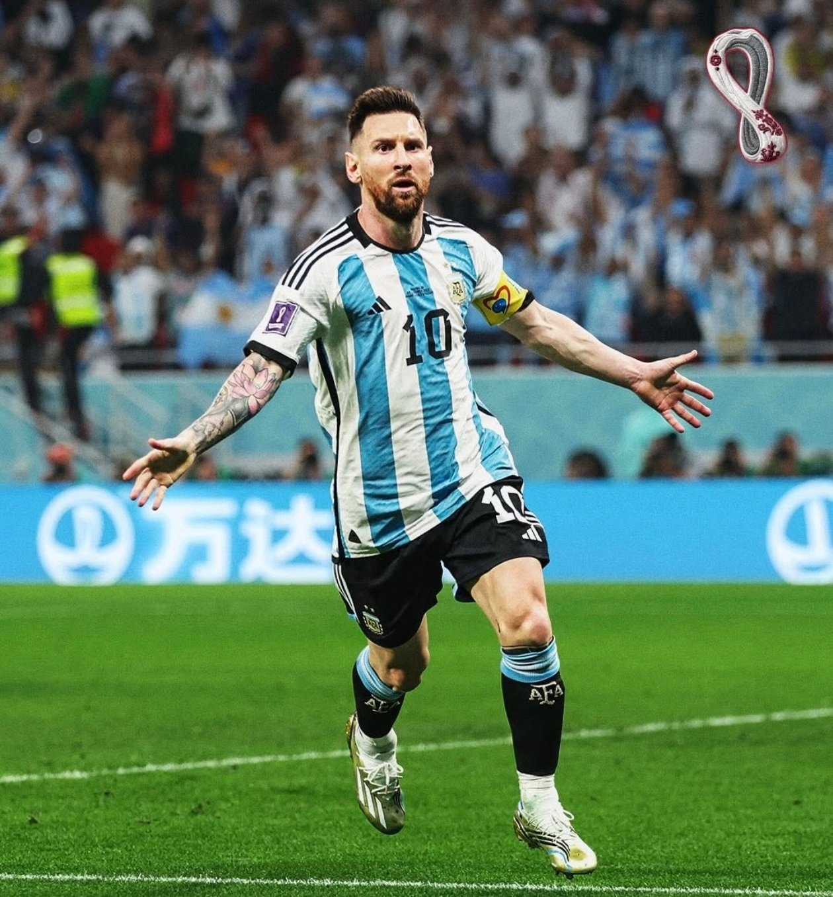
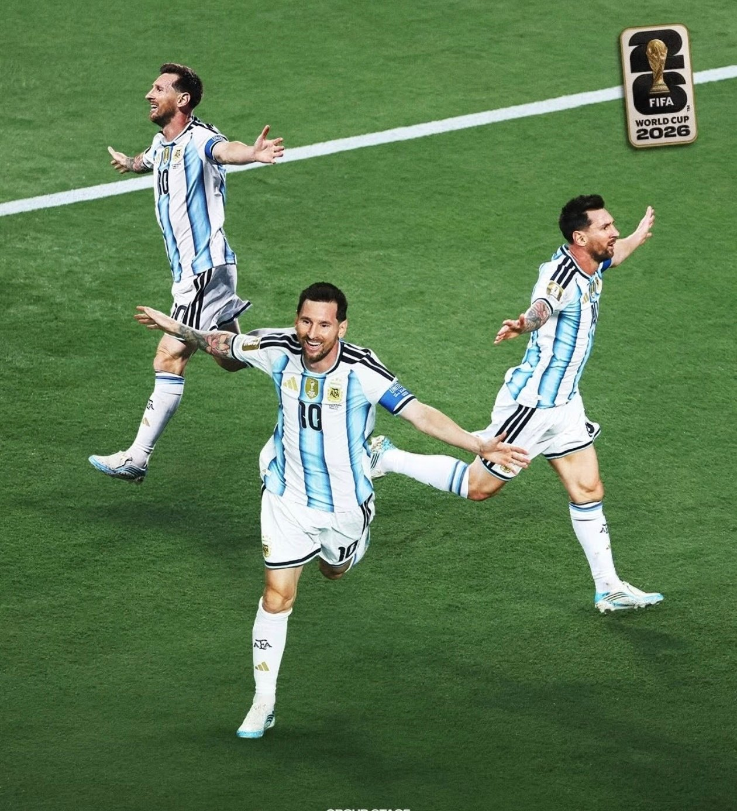

Argentina · FIFA World Cup
Twenty years · One nation · One number
二十年的阿根廷国家队世界杯旅程

2006
少年初登A boy arrives
19 岁，第一次世界杯进球。他把手指指向天空。

2010
成长中的十号The ten, growing
10 号球衣第一次真正压在他身上：年轻、快速，也第一次尝到失败。

2014
巅峰与遗憾The summit, and the miss
一路把球队带到马拉卡纳的决赛，然后看着奖杯从一米之外走开。

2018
低谷之后Still walking
2016 年他说过退出。2018 年他又跪在草地上，为了留下来而进球。

2022
圆梦The world, at last
第五次世界杯，36 年之后，他把奖杯举过头顶。

2026
最后一舞The last dance
最后一次以球员身份走进世界杯。他踢完，然后走出球场。
2006 — 2026
TWENTY YEARS. ONE NATION. ONE NUMBER.
纵有疾风起， 人生不言弃。
致敬 Lionel Messi
致敬那个用二十年，写完阿根廷 10 号故事的人。